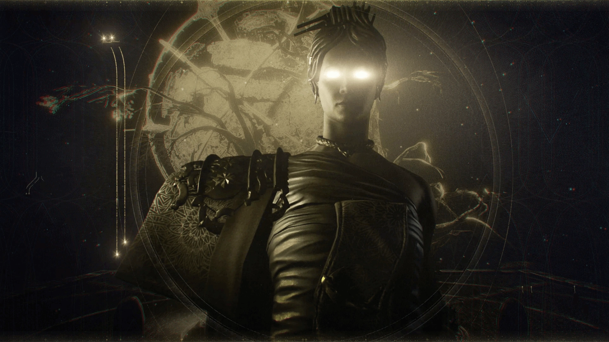
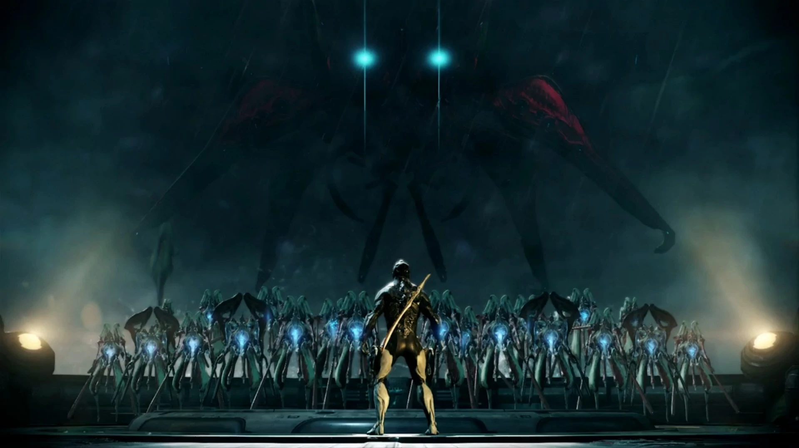
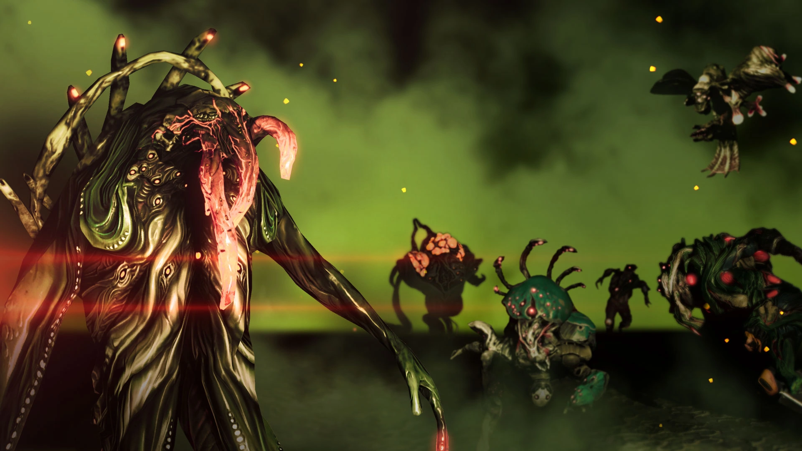
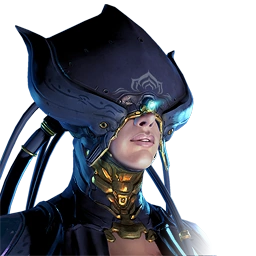
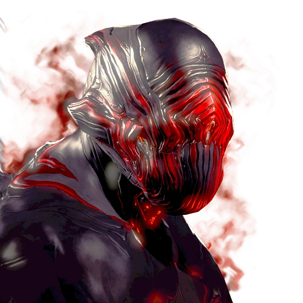
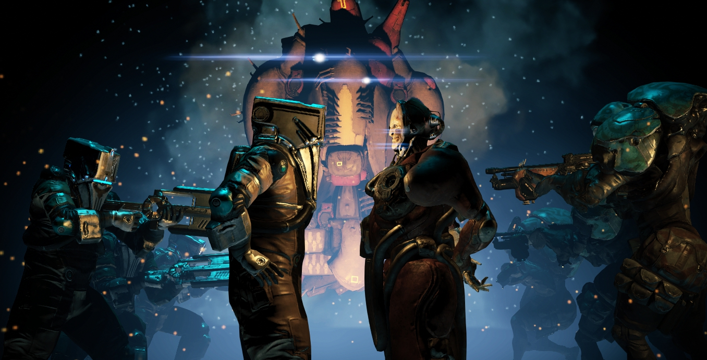

orokin

The Orokin were sort of dystopian. To the casual observer, everything seemed fine and perfect, but if you dug a bit deeper you would find that they were actually pretty fucked up in order to maintain this perfect society. For example, they built mind control towers that makes anyone who enters them become a mindless warrior to defend the tower. They spread out in the Origin star system, building stations and making Earth practically uninhabitable due to toxic chemicals. To aid in their expansion, they created a vast amount of genetically inferior clones to use as slaves. But it wasn't enough.
Sentients

So in an effort to colonize distant worlds, the Orokin created a bunch of self-sustaining robots and sent them off to a distant star system, Tau, in order to terraform new planets. And everything continued as usual. Until one day the robots somehow gained sentience and decided to kill their former masters. The Orokin called them the Sentients.
Infested

Even though the Orokin had super advanced weaponry, it wasn't much use against the Sentients due to their ability to adapt to new threats. Out of desperation, the Orokin created a new weapon, an all consuming mutating horde, in an attempt to combat the Sentients, today known as the Infested. But while the Infested spread across the Origin System and slowed them down, it was no match for the Sentients. So for a while it seemed like the Orokin would lose the fight and the Sentients would take over the system. That is, until the Void Jump Incident.
Margulis

A ship, probably a passenger ship, called the Zariman Ten-Zero, had some kind of mysterious accident in the Void and the children on the ship got sweet Void powers. The Orokin had this lady, Margulis, a genetic scientist, assigned to work on this thing for the kids called the "transference program." Then the Orokin were like "wait what if we weaponize the kids" but Margulis was like "no" so they had her executed and then they basically enslaved the children, known as the "Tenno" (from Ten-Zero) and made them control these cyborg things called Warframes. These were super powerful and really effective against the Sentients. So the Sentient Hunhow had his daughter, Natah, infiltrate the Orokin society in a last ditch effort to put an end to the Orokin.
stalker

Just when it seemed the Sentients were beaten, with Warframes everywhere defending the Orokin, Natah took control of the Tenno. She turned them against the Orokin, slaughtering massive numbers of them. One.. being (nobody knows exactly what he is, but possibly a Tenno who was not controlled by Natah) witnessed this event and felt betrayed by the Tenno, vowing to seek revenge for the death of the Orokin. He is now known as The Stalker. With the Orokin Empire in shambles, it was time for Natah to complete her final mission: destruction of the Tenno. But, during her travel to the Origin system, she had been rendered sterile, and so instead of killing the Tenno, she decided to take them on as her children. She hid them on the Moon, from her father Hunhow, preserving them in a "second dream."
grineer-vs-corpus

Among the ruins of the Orokin Empire, the cloned slaves revolted across the entire Origin System, forming a new faction known today as the Grineer. They stole the cloning technology from the Orokin and fell under the leadership of two Orokin who became known as the Twin Queens. An Orokin faction of merchants and corporatists also separated from the Orokin Empire in the wake of its defeat. They formed powerful trade conglomerates and became known as The Corpus. Many years the Grineer and Corpus became more powerful, threatening the lives of innocent civilians, Natah decided it was time to awaken the Tenno to defend the Origin System once again. To take on her new identity as The Lotus. And that's where the in-game story starts...